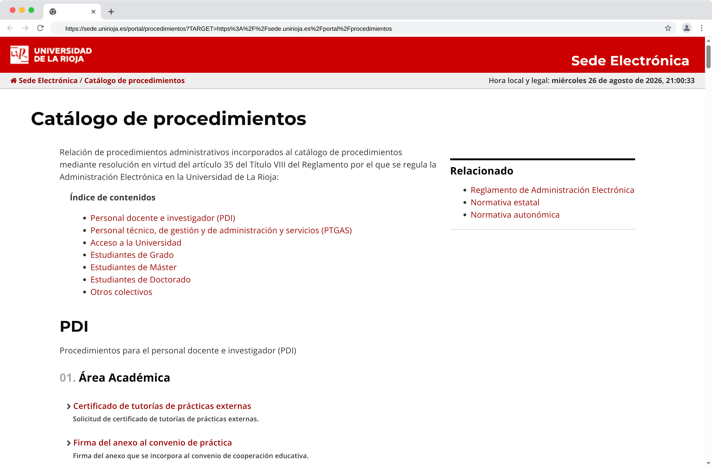
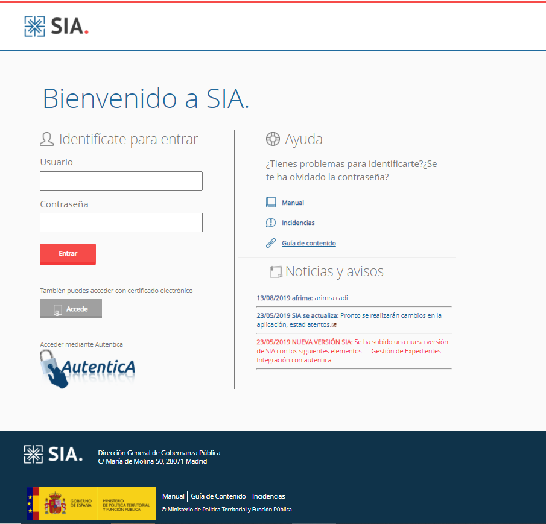
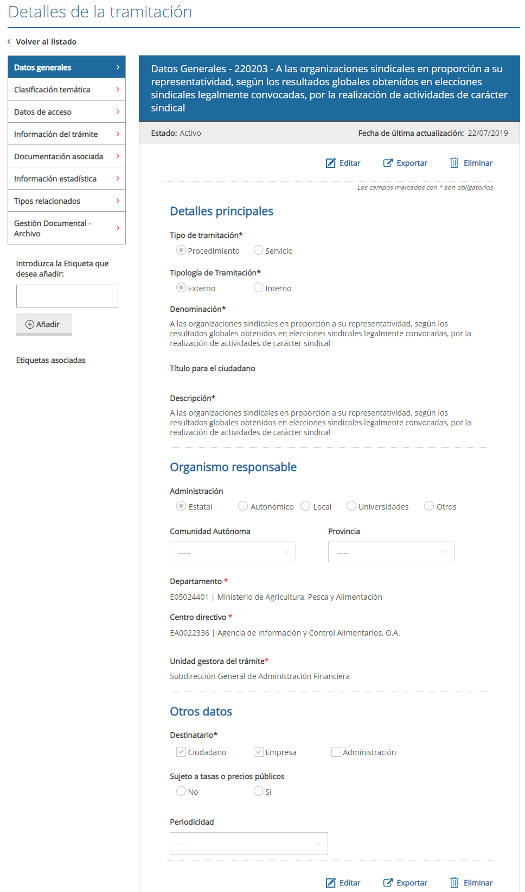

Catálogo de Procedimientos
Inventario de los procedimientos administrativos. La Sede Electrónica ya dispone de un catálogo en https://sede.unirioja.es/portal/procedimientos:

Motivación
A nivel AGE, ya se dispone de una aplicación llamada SIA (Sistema de Información Administrativa), cuya principal motivación es el establecimiento de un inventario de procedimientos y servicios a lo largo y ancho del territorio español.


El planteamiento de esta aplicación es múltiple en las funciones para las que pretende servir:
- Catálogo de Procedimientos de la Universidad, a imagen y semejanza de SIA pero sin la complejidad de una aplicación AGE.
- Definición de los formularios y pasos que conlleva cada procedimiento, que permita la identificación de la información que se recoge en cada caso.
- Clasificación de los tipos documentales que se incorporan en cada procedimiento, motivado por el principio de llevar el Archivo al principio de la tramitación, no al final.